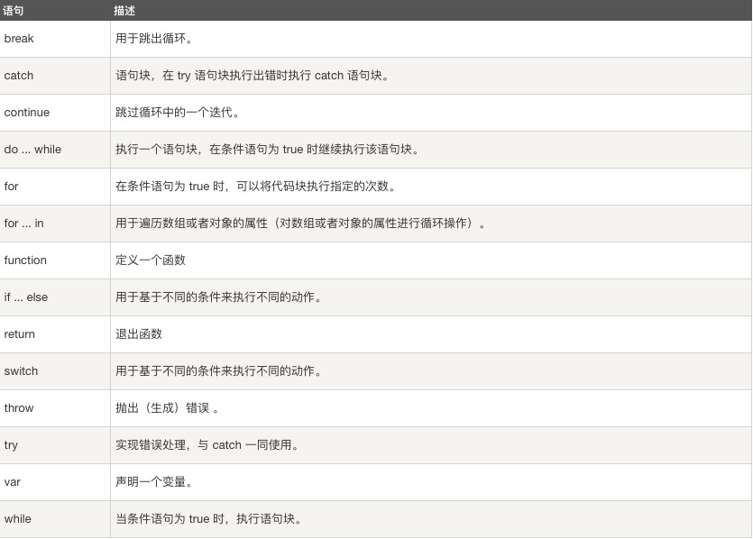

JavaScript 语句向浏览器发出的命令。语句的作用是告诉浏览器该做什么。
JavaScript 语句是发给浏览器的命令。
这些命令的作用是告诉浏览器要做的事情。
下面的 JavaScript 语句向 id="demo" 的 HTML 元素输出文本 "你好 Dolly" ：
实例
document.getElementById("demo").innerHTML = "你好 Dolly";
hahahaha
分号用于分隔 JavaScript 语句。 通常我们在每条可执行的语句结尾添加分号。 使用分号的另一用处是在一行中编写多条语句。 实例: a = 5; b = 6; c = a + b; 以上实例也可以这么写: a = 5; b = 6; c = a + b;
JavaScript 代码是 JavaScript 语句的序列。
浏览器按照编写顺序依次执行每条语句。
本例向网页输出一个标题和两个段落：
实例
document.getElementById("demo").innerHTML="你好 Dolly";
document.getElementById("myDIV").innerHTML="你最近怎么样?";
JavaScript 可以分批地组合起来。
代码块以左花括号开始，以右花括号结束。
代码块的作用是一并地执行语句序列。
本例向网页输出一个标题和两个段落：
实例
function myFunction()
{
document.getElementById("demo").innerHTML="你好Dolly";
document.getElementById("myDIV").innerHTML="你最近怎么样?";
}
JavaScript 语句通常以一个 语句标识符 为开始，并执行该语句。 语句标识符是保留关键字不能作为变量名使用。 下表列出了 JavaScript 语句标识符 (关键字) ：
JavaScript 会忽略多余的空格。您可以向脚本添加空格，来提高其可读性。下面的两行代码是等效的： var person="Hege"; var person = "Hege";
您可以在文本字符串中使用反斜杠对代码行进行换行。下面的例子会正确地显示：
document.write("你好 \
世界!");
不过，您不能像这样折行：
document.write \
("你好世界!");
提示：JavaScript 是脚本语言。浏览器会在读取代码时，逐行地执行脚本代码。而对于传统编程来说，会在执行前对所有代码进行编译。